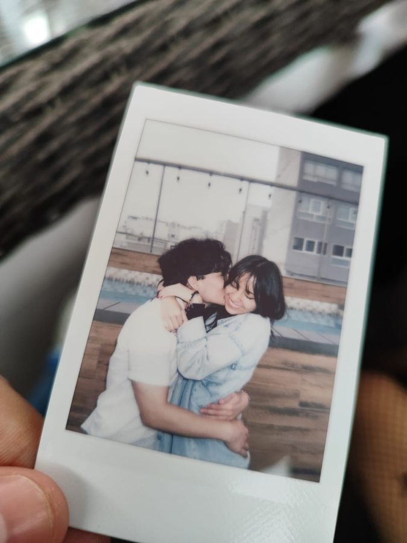
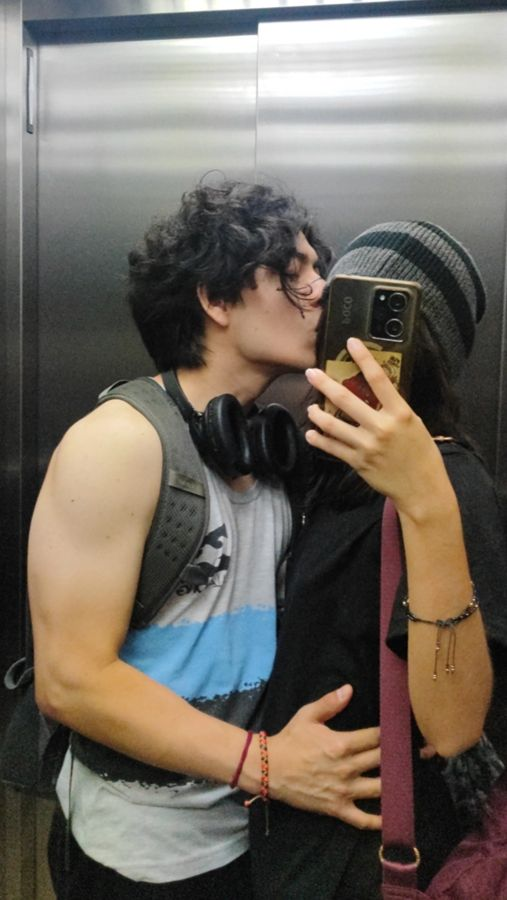
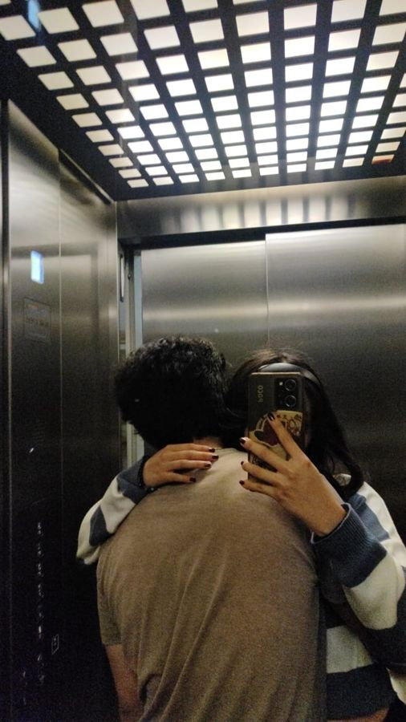
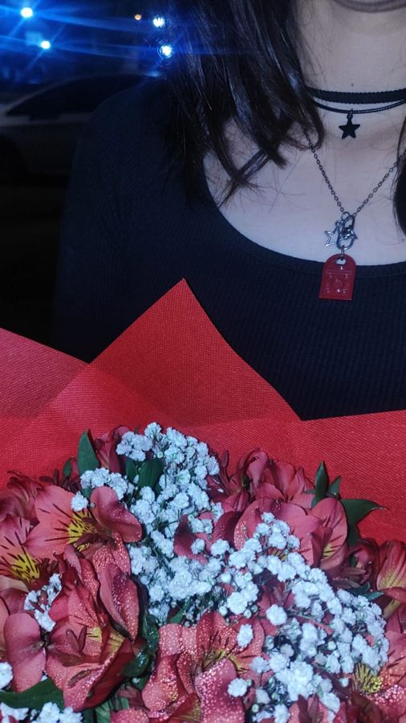
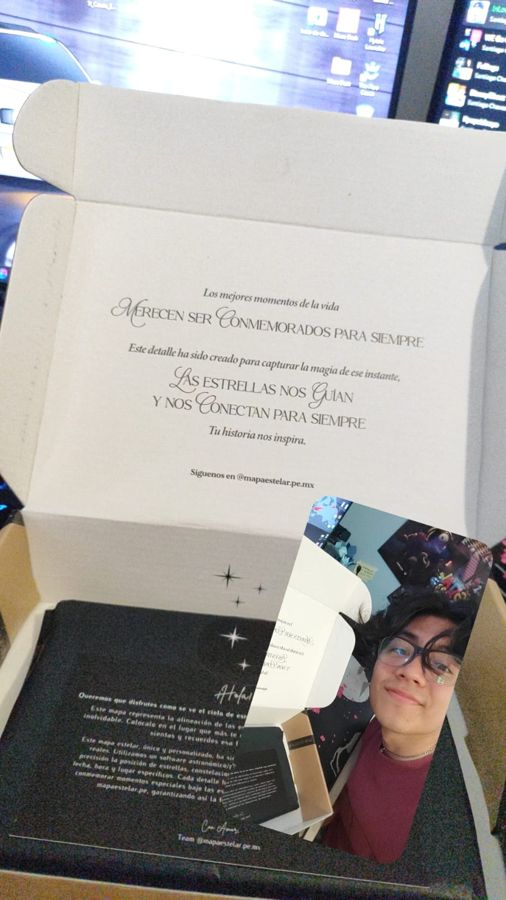
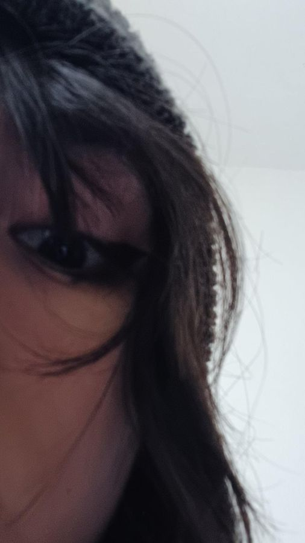
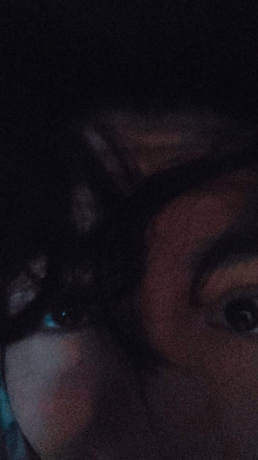
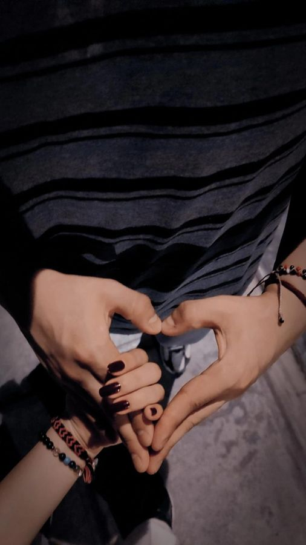
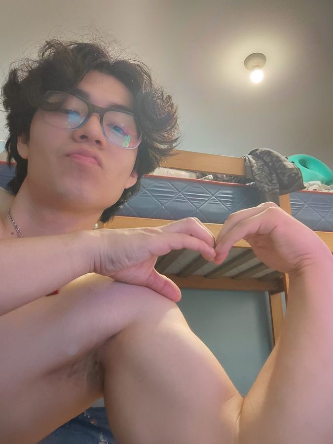

Dicen que un hilo rojo invisible une a dos personas destinadas a encontrarse. Puede estirarse o enredarse, pero nunca romperse.

No sabía que estabas por entrar a mi vida, y mira todo lo que cambió.

Cualquier lugar se vuelve el mejor si estás tú.

Ahí es donde se me para el tiempo.

Unas flores para la más bonita, en su día.

Nuestro primer mes. Yo con tu regalito, nervioso antes de dártelo.

Dices que no puedes mirarme, pero yo daría lo que fuera por quedarme viéndolos.

Y estos son tuyos. Mírame todo lo que quieras, mi amor.

Tomarte de la mano es de las cosas más simples, y de las que más disfruto contigo.
Esta sonrisa es tu culpa, que conste.

Todo lo que viene, lo quiero contigo.